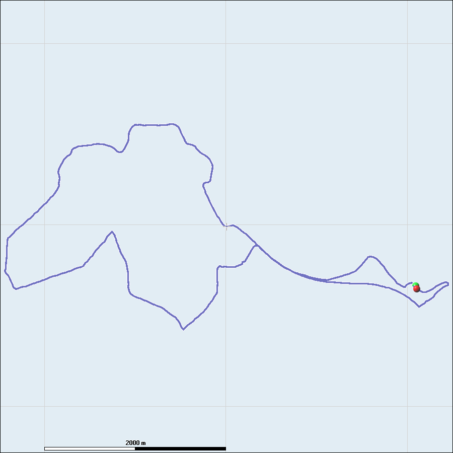
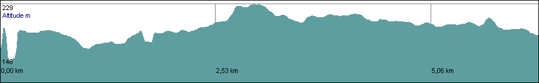
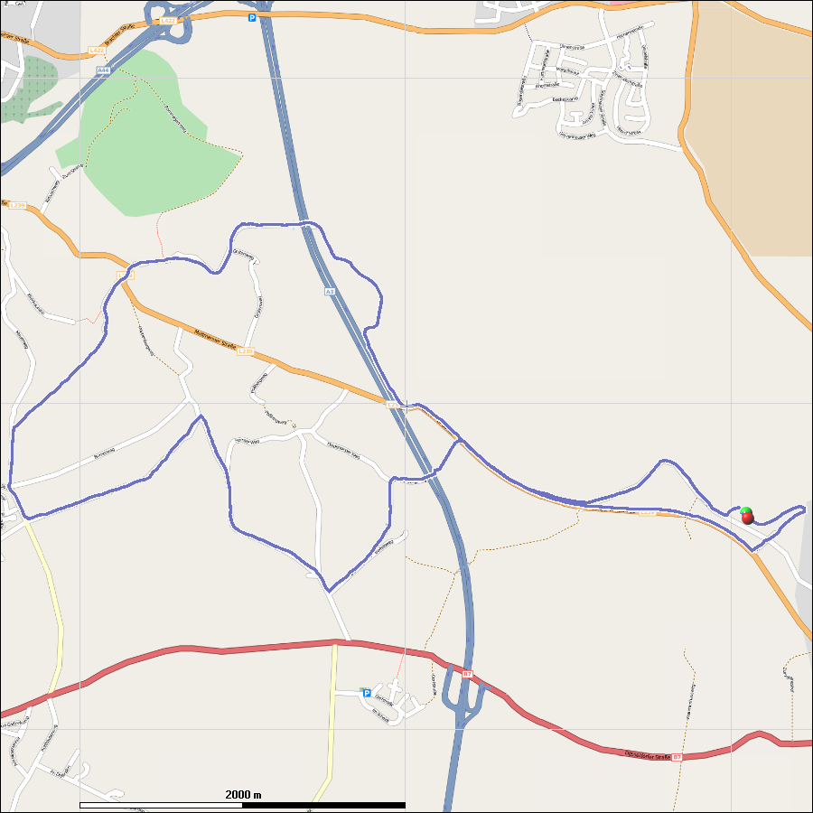
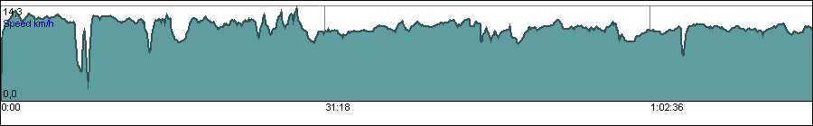

Training Analysis
| Name | Hasslerrunde |
| Description | |
| Date | 15.03.2008 12:51 |
| Athlete | cav3man |
| Sport | running |
| Distance | 6,32 km |
| Total Time | 0.00:40:32 |
| Active Time | 0.00:39:53 |
Calories
Your training consumed about 605 kcal.
Speed
| Max Speed | 12,4km/h |
| Avg Speed (total) | 9,4km/h |
| Avg Speed (active) | 9,5km/h |

Speed and Altitude Table
| Time | Speed | Altitude |
|---|
| 0.00:02:00 | 2,6 km/h | 183 m |
| 0.00:04:00 | 11,8 km/h | 183 m |
| 0.00:06:00 | 11,2 km/h | 192 m |
| 0.00:08:00 | 11,0 km/h | 176 m |
| 0.00:10:00 | 9,3 km/h | 178 m |
| 0.00:12:00 | 9,8 km/h | 185 m |
| 0.00:14:00 | 9,5 km/h | 192 m |
| 0.00:16:00 | 9,5 km/h | 195 m |
| 0.00:18:00 | 8,7 km/h | 204 m |
| 0.00:20:00 | 8,3 km/h | 224 m |
| 0.00:22:00 | 9,5 km/h | 222 m |
| 0.00:24:00 | 9,1 km/h | 210 m |
| 0.00:26:00 | 8,6 km/h | 213 m |
| 0.00:28:00 | 9,3 km/h | 215 m |
| 0.00:30:00 | 10,1 km/h | 210 m |
| 0.00:32:00 | 10,2 km/h | 206 m |
| 0.00:34:00 | 9,9 km/h | 202 m |
| 0.00:36:00 | 9,4 km/h | 202 m |
| 0.00:38:00 | 9,2 km/h | 205 m |
| 0.00:40:00 | 9,6 km/h | 198 m |
| 0.00:42:00 | 9,3 km/h | 192 m |
Altitude
| Min Altitude | 146m |
| Max Altitude | 229m |
| Total Ascent | 68m |
| Total Descent | 0m |

Map

Laps
Overview

| Lap | Start | Distance | Avg Speed |
|---|
| | Time | km | km/h |
|---|
| 1 | 0:00 | 6,30 | 9,3 |
| 2 | 40:37 | 0,02 | 14,2 |
Lap 1
| Lap Distance | 6,30 km |
| Total Distance | 6,30 km |
| Start Time | 0.00:00:00 |
| Lap Duration | 0.00:40:27 |
| Min Altitude | 146m |
| Max Altitude | 229m |
| Total Ascent | 68m |
| Total Descent | 0m |
| Max Speed | 12,4km/h |
| Avg Speed (total) | 9,3km/h |
| Avg Speed (active) | 9,5km/h |
Lap 2
| Lap Distance | 0,02 km |
| Total Distance | 6,32 km |
| Start Time | 0.00:40:37 |
| Lap Duration | 0.00:00:05 |
| Min Altitude | 188m |
| Max Altitude | 188m |
| Total Ascent | 0m |
| Total Descent | 0m |
| Max Speed | 9,5km/h |
| Avg Speed (total) | 14,2km/h |
| Avg Speed (active) | 14,9km/h |
Pauses

| | Start | Duration | Distance |
|---|
| | Time | | km |
|---|
| 1 | 0.00:01:38 | 0.00:00:11 | 0,00 |
| | Total | 0.00:00:11 | |
Training Images
No training images found.
Report created by Run.GPS Analyzer.